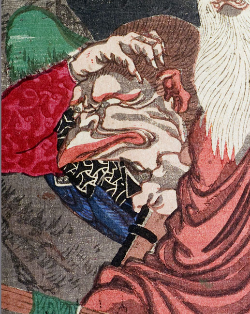

天狗。耳が尖っている。目蓋の縁と耳の縁が赤い。口は嘴のようになっており、その先も赤い。赤い衣を身に着けている。右手を額にあて、前方をみやっている。手指の爪は鋭い。
著作者：猩々周麿（河鍋暁斎）／出典：親書誌：U426_nichibunken_0130：僧正坊と牛若丸；ソウショウボウトウシワカマル／日付：2009／資源識別子：U426_nichibunken_0130_0001_0005
Copyright (c)2010- International Research Center for Japanese Studies, Kyoto, Japan. All rights reserved.